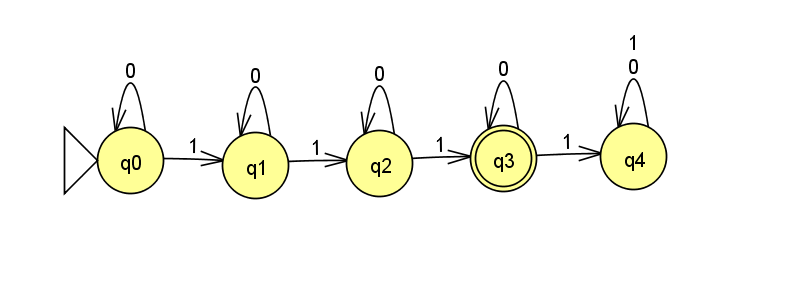

Lecture Extra
This page contains supplementary material from lectures.
End-of-class Surveys
Latest End-of-class Survey: Wed 2/17
Previous:
In-Class Exercises
1 April 12, 2021: TMs and Recursion
Here is the code from lecture.
2 February 1, 2021: DFAs
2.1 Question
Design a DFA M that recognizes language A:
A = \{w\mid w\textrm{ has exactly three } 1\textrm{s}\}
Assume \Sigma = \{0,1\}.
Q is a finite set called the states,
\Sigma is a finite set called the alphabet,
\delta:Q\times\Sigma\rightarrow Q is the transition function,
q_0\in Q is the start state, and
F\subseteq Q is the set of accept states.
2.2 Answer

Each state in the machine represents how many 1s have been seen "so far".
Seeing another 1 moves to the next state.
Seeing a 0 keeps the machine in the same state.
Accept if exactly three 1s have been seen.
formally:
M = (Q,\Sigma,\delta, q_{start},F) where:Q = \{q_0,q_1,q_2,q_3,q_4\}
\Sigma = \{0,1\}
- \delta =
0
1
q0
q0
q1
q1
q1
q2
q2
q2
q3
q3
q3
q4
q4
q4
q4
q_{start} = q_0
F = \{q3\}